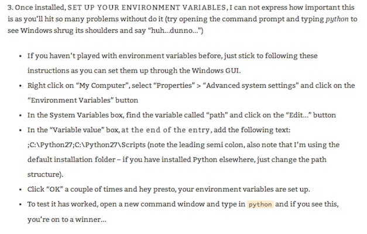

Open Project Management
13 February 2014
1. Basic Concepts of SNA
2. History of SNA
3. Measurements in SNA
4. Dynamics in SNA
5. Bibliography
6. Tools
7. Examples
1. Basic Concepts of SNA
Setup #02: Python: Path
Source: http://adesquared.wordpress.com/2013/07/07/setting-up-python-and-easy_install-on-windows-7/
Network: the concept
a network is a set of relationships. More formally, a network contains a set of objects (in mathematical terms, nodes) and a mapping or description of relations between the objects or nodes. The simplest network contains two objects and one relationship that links them.
Source: Kadushin, Charles. Understanding Social Networks: Theories, Concepts, and Findings. New York: Oxford University Press, 2012.
Network types by analysis
- Ego-centric networks are those networks that are connected with a single node or individual.
- Socio-centric networks are networks in a “box.” Connections between children in a classroom or between executives or workers in an organization are closed system networks and the ones most often studied in terms of the fine points of network structure.
- Open system networks are networks in which the boundaries are not necessarily clear.
Source: Kadushin, Charles. Understanding Social Networks: Theories, Concepts, and Findings. New York: Oxford University Press, 2012.
Homophily: definition
More formally, if two people have characteristics that match in a proportion greater than expected in the population from which they are drawn or the network of which they are a part, then they are more likely to be connected. The converse is also true: if two people are connected, then they are more likely to have common characteristics or attributes. [...] Homophily is a process as well an outcome.
Source: Kadushin, Charles. Understanding Social Networks: Theories, Concepts, and Findings. New York: Oxford University Press, 2012.
Homophily: causes
- the same kinds of people come together
- people influence one another and in the process become alike
- people can end up in the same place
- and once they are in the same place, the very place influences them to become alike
Source: Kadushin, Charles. Understanding Social Networks: Theories, Concepts, and Findings. New York: Oxford University Press, 2012.
Directed graphs: possibile connections
- none at all (they are not connected)
- A relates to B
- B relates to A
- A and B both relate to one another
Source: Kadushin, Charles. Understanding Social Networks: Theories, Concepts, and Findings. New York: Oxford University Press, 2012.
Triads: 16 possible connections

Source: Kadushin, Charles. Understanding Social Networks: Theories, Concepts, and Findings. New York: Oxford University Press, 2012.
Leaders in a social network
- embody more of the norms of the group than the followers
- tend more often to initiate interaction with members either directly or through others
- are those who are chosen more often by others as a result of the activity, interaction, and sentiment feedback loops
- are a better match with the tacit standards or “norms” of the group than others in the group possess
- are those who enjoy and tolerate greater asymmetry in their choices than others
Source: Kadushin, Charles. Understanding Social Networks: Theories, Concepts, and Findings. New York: Oxford University Press, 2012.
Size of a social network: Dunbar's number
One’s network size, either in terms of outreach or making connections within one’s immediate social environment, is bounded by human cognitive abilities. The average person historically has had a maximum effective network size of about 150, but that size appears to have doubled in current Western countries such as the United States.
Source: Kadushin, Charles. Understanding Social Networks: Theories, Concepts, and Findings. New York: Oxford University Press, 2012.
Importance of weak ties
- weak ties facilitate the flow of information from otherwise-distant parts of a network. Individuals with few weak ties will be deprived of information from the distant parts of the social system and will be confined to the provincial news and views of their close friends
- weak ties help to integrate social systems. The macroscopic side of this communication argument is that social systems lacking in weak ties will be fragmented and incoherent
Source: Kadushin, Charles. Understanding Social Networks: Theories, Concepts, and Findings. New York: Oxford University Press, 2012.
Network: the concept
Source: Kadushin, Charles. Understanding Social Networks: Theories, Concepts, and Findings. New York: Oxford University Press, 2012.
Network: the concept
Source: Kadushin, Charles. Understanding Social Networks: Theories, Concepts, and Findings. New York: Oxford University Press, 2012.
Network: the concept
Source: Kadushin, Charles. Understanding Social Networks: Theories, Concepts, and Findings. New York: Oxford University Press, 2012.
Network: the concept
Source: Kadushin, Charles. Understanding Social Networks: Theories, Concepts, and Findings. New York: Oxford University Press, 2012.
Network: the concept
Source: Kadushin, Charles. Understanding Social Networks: Theories, Concepts, and Findings. New York: Oxford University Press, 2012.
Network: the concept
Source: Kadushin, Charles. Understanding Social Networks: Theories, Concepts, and Findings. New York: Oxford University Press, 2012.
Network: the concept
Source: Kadushin, Charles. Understanding Social Networks: Theories, Concepts, and Findings. New York: Oxford University Press, 2012.
Network: the concept
Source: Kadushin, Charles. Understanding Social Networks: Theories, Concepts, and Findings. New York: Oxford University Press, 2012.
Network: the concept
Source: Kadushin, Charles. Understanding Social Networks: Theories, Concepts, and Findings. New York: Oxford University Press, 2012.
Network: the concept
Source: Kadushin, Charles. Understanding Social Networks: Theories, Concepts, and Findings. New York: Oxford University Press, 2012.
Thank you!
Massimo Menichinelli / info@openp2pdesign.org / @openp2pdesign

This work is licensed under a Creative Commons Attribution 3.0 Unported License.
Massimo Menichinelli - 2013
openp2pdesign.org